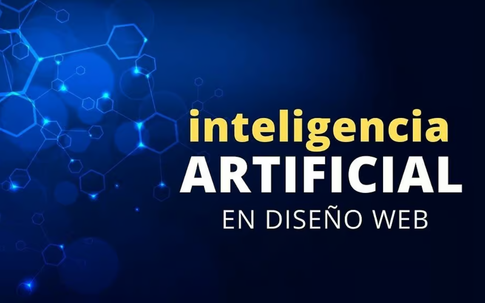
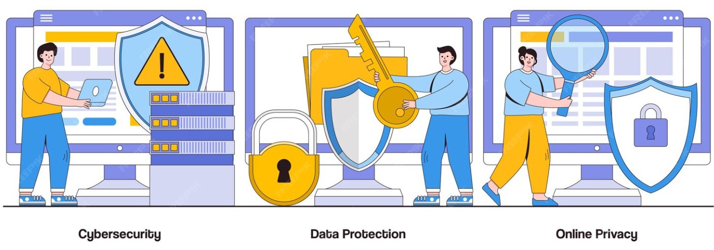
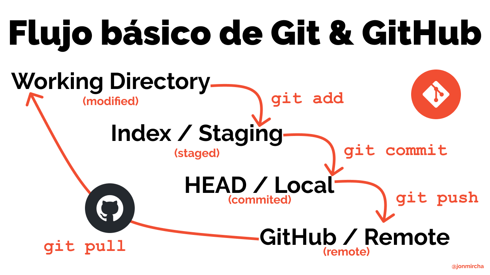

Introducción
Este blog técnico tiene como objetivo analizar tendencias actuales en el desarrollo de software y la tecnología moderna.
Los artículos presentados abordan conceptos fundamentales que todo desarrollador debe comprender para mantenerse actualizado.
El contenido está estructurado utilizando HTML5 semántico para garantizar organización, claridad y accesibilidad.
Artículos Técnicos
Inteligencia Artificial en el Desarrollo Web
La Inteligencia Artificial está transformando la forma en que se desarrollan aplicaciones web modernas.
Desde sistemas de recomendación hasta chatbots automatizados, la IA permite crear experiencias personalizadas para los usuarios.
Los desarrolladores integran APIs de aprendizaje automático para mejorar la eficiencia y automatización de procesos.
- Automatización de tareas repetitivas.
- Personalización de contenido dinámico.
- Análisis predictivo del comportamiento del usuario.

Los estándares tecnológicos son promovidos por el
World Wide Web Consortium (W3C).
Ciberseguridad Básica para Desarrolladores
La seguridad es un aspecto esencial en cualquier aplicación web moderna.
Las vulnerabilidades más comunes incluyen inyección de código, ataques XSS y exposición de datos sensibles.
Implementar buenas prácticas reduce significativamente los riesgos de ataques informáticos.
- Validar siempre la entrada de datos.
- Utilizar conexiones seguras HTTPS.
- Mantener dependencias actualizadas.

Para ampliar conocimientos puede consultarse
MDN Web Docs.
Control de Versiones con Git
Git es una herramienta fundamental para el desarrollo colaborativo de software.
Permite registrar cambios en el código, crear ramas y trabajar en equipo sin conflictos.
El uso de repositorios remotos facilita la gestión de proyectos en entornos profesionales.

Plataformas como
GitHub
permiten alojar repositorios y colaborar en línea.